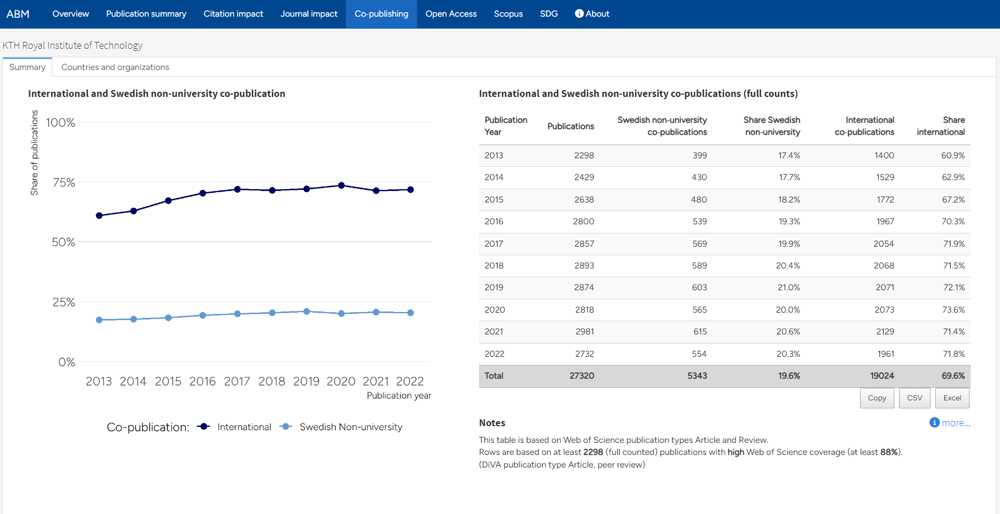

ABM User Guide
Guide to the Annual Bibliometric Monitoring at KTH
This guide gives an introduction to the Annual Bibliometric Monitoring (ABM) at KTH Royal Institute of Technology. The purpose of the guide is to help you navigate the presentation of results, to understand the bibliometric indicators used in the report, and to interpret the results.
Background
The aim of the ABM is to assist monitoring, research evaluation and quality assurance at KTH, but also to provide KTH organizations and researchers with information related to their publications. The ABM was introduced in 2013 and was published annually in the same format since then. In 2019, a project aiming to redesign and develop the ABM was started. This resulted in the current solution, maintaining the same information as in previous years but in a more flexible framework with a presentation that is more dynamic, extendable and easier to maintain. That is the version of ABM described here.
The ABM results are available at different levels, for KTH in total, Schools, Departments and for individual researchers. The report currently has the same format and contents at all levels. Data is compiled in October - November each year and is presented for the last 10 full years.
Only publications registered in DiVA and affiliated with KTH are included in the results (i.e. publications that KTH researchers have published at other organizations are excluded). Affiliations to KTH are based on the actual author affiliation as written in the published paper. Indicators under Citation/Journal impact and Co-publishing tabs are based on Web of Science1, and indicators are therefore only presented for publications covered by Web of Science. Indicators under the Scopus and SDG tabs are only presented for publications covered by Scopus.
If a School or Department have changed name or the organizational structure has changed, publications affiliated to old organizational units have been assigned to the corresponding current unit when possible.
Overview
The Overview tab includes key indicators displayed for the latest available time period2 and general information about ABM and publication activities at KTH.
author’s share of a publication is counted as 1/n where n denotes the number of authors. The exception is the Co-publication charts, which are based on full counts.
Overviews at the KTH, school and department level are available to everyone, except for the button for publication list download which is only available for logged in KTH users.

The individual view, only available to the researcher, also includes a link to edit publications in DiVA.
{kind=link}
Publications in DiVA
The Publications in DiVA tab shows the number of publications registered in DiVA for the researcher or organizational unit, by year and by publication type. Web of Science (WoS) and Scopus coverage are also shown for each publication type. The validity of bibliometric indicators is in general higher if the share of publications covered is high. Results based on publications with a smaller share covered should be treated with caution.
There is a tab for fractionalized counts and one for full counts. Both graphs are based on the fractionalized counts table.
{kind=link}
Citation impact
The Citation impact tab shows citation impact for the researcher’s/unit’s publications. All indicators on this tab are based on fractionalized counts.
The first table in this view shows the total and average number of citations after three years, i.e. citations received in the publication year and the two directly following years, as well as the share of publications that were not cited in that time. This table is based on the Web of Science document types Article, Proceedings paper, Review, Letter and Editorial.
The second table is based on the Web of Science document types Article and Review, and shows Field Normalized Citations (Cf) and the share of publications belonging to the 10 percent most cited in its field.
The normalization is done so that the citation value for each publication is divided by the average number of citations received by publications from the same year, within the same Web of Science category (or categories) and of the same document type. For more detailed descriptions of the field normalized indicators used at KTH, see Formal definitions.
Mean-based citation indicators (such as Cf) can be strongly affected by a single publication (or a few) with a very high citation count relative to its field, while the Share Top 10% indicator is less sensitive to outliers. In that sense, Cf and Share Top 10% are complementary. Since field normalized indicators are unstable at low publication counts, the citation indicators are presented both as yearly values (dots) with a volume weighted three-year sliding mean superimposed in the graph to indicate the overall trend (solid line). Indicators based on a small number of publications should still be interpreted with caution.
{kind=link}
Journal impact
The Journal impact tab shows the average citation impact of the journals where researcher’s/unit’s have published their publications. All numbers on this tab are based on fractionalized counts.
The table shows the average Journal Field Normalized Citations (JCf) and the share of publications in the 20 percent most cited journals in its Web of Science subject category/categories. This table is based on the publication types Article and Review.
The JCf and Share Top 20% indicators supplement each other the same way as the Cf and Share Top 10% indicators. By evaluating the impact of the journals rather than the publications themselves, these indicators supplement the picture of the publishing profile, and the journal indicators are often seen as a proxy of the quality of publication channels. JCf is also used as a part of the model for allocating KTH funding to the schools.
{kind=link}
Co-publishing
The Co-publishing tab shows the level of co-publication with universities and other organizations. All numbers on this tab are based on the Web of Science categories Article and Review and use full counts, i.e. a publication is counted as one even if there are many co-authors.
Here, a Swedish non-university co-publication means a publication with at least one address belonging to a Swedish organization outside academia while an International co-publication is a publication with at least two countries in the Web of Science addresses field.
 The sub-tab Countries and organizations contains list of the countries and organizations that the selected unit has co-published with, which can be searched and filtered. These tables are also summarized based on the number of co-authors on individual publications, to differentiate between smaller collaborations and collaborations based on large author groups. The number of rows shown can be selected under each table.
{kind=link}
{kind=link}
Open Access
The Open Access tab shows the OA status of publications according to OpenAlex. For a publication to be included, it needs to be marked as a peer reviewed publication in DiVA and have a Digital Object Identifier (DOI) that OpenAlex can recognice and determine an OA status for.
The statuses are presented as defined by OpenAlex. For further information, see “What do the types of oa status mean?”.

Scopus
The Scopus tab presents bibliometric indicator data based on the Scopus database, as a complement to the indicators in the tabs Citation impact, Journal impact and Co-publishing. This Scopus tab has sub-tabs each containing data for one of these aspects. In Citation impact, the indicator for field-weighted normalized citations is called FWCI, which is similar to the Cf-indicator. The Share Top 10% is a direct parallell to the same indicator based on Web of Science data.
Field-normalization for the Scopus indicators are based on the same principles as the Web of Science-based indicators, but are based on the subject categories in the Scopus database and supplied directly by Scopus.
{kind=link}
SDG
The SDG tab provides an overview of how publications are mapped against the UN sustainability goals (SDG).
The mapping is provided from Scopus, and only publications present in the Scopus database are therefore included in the summary. Publications are mapped to SDGs based on search queries, using keywords found in titles, abstract and author keywords, and the full methodology is described by Scopus here. The same SDG-mapping is also used in e.g. the Times Higher Education Impact ranking (THE Impact ranking). Also note that individual publications can be mapped towards several SDGs.
{kind=link}
Footnotes
Included indices: Science Citation Index Expended (SCIE), Social Sciences Citation Index (SSCI), Arts &Humanities Citation Index (AHCI), Conference Proceedings Citation Index -Sciences (CPCI-S) and Conference Proceedings Citation Index -Social Sciences & Humanities (CPCI -SSH)↩︎
Last year with a complete publication record in DiVA (usually year of last autumn – 1), with a non-zero count, for the Total publications number, the full period for WoS/Scopus coverage and last three-year period with an indicator for the other numbers.↩︎